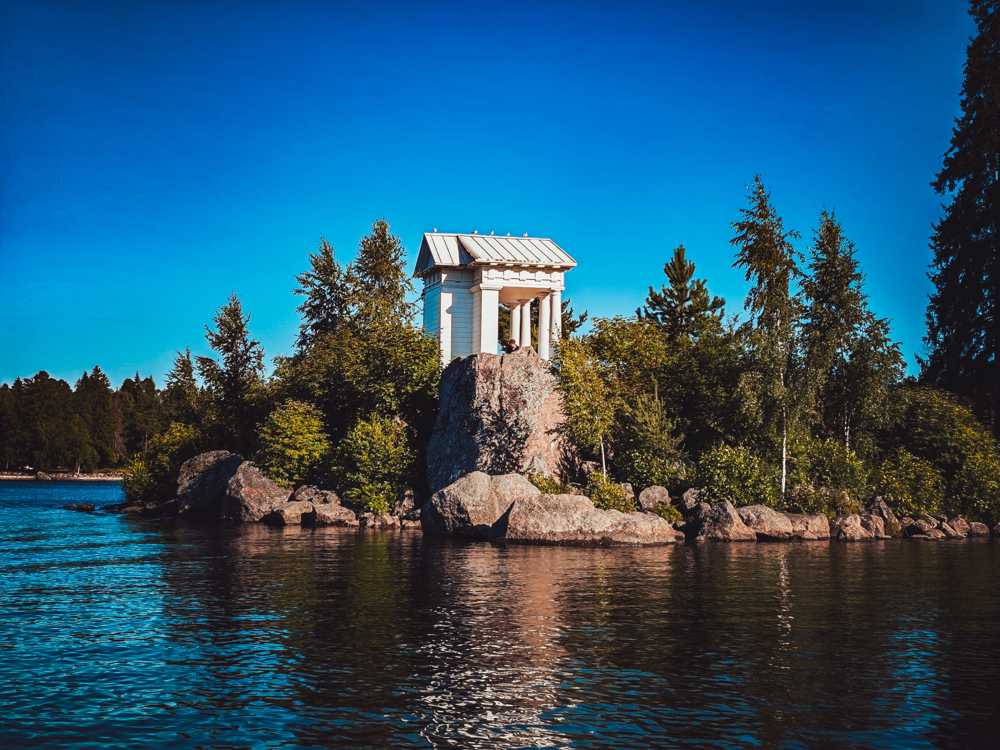
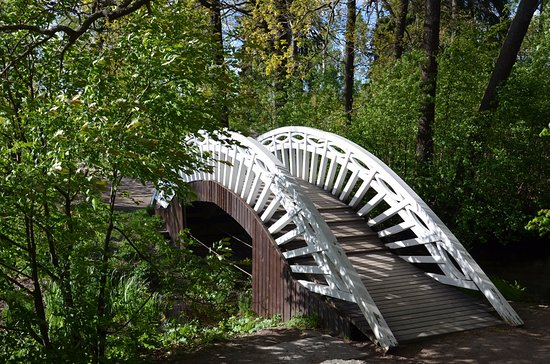
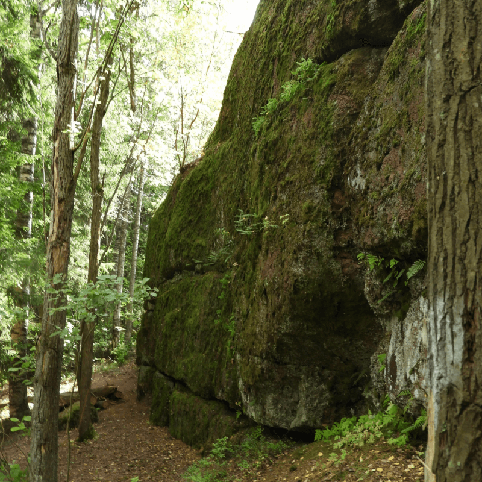

Храм Нептуна
Ротонда с колоннами на высокой скале над заливом — самый узнаваемый вид Монрепо. Отсюда открывается панорама на воду и острова.
Места, ради которых стоит пройти парк от начала до конца.

Ротонда с колоннами на высокой скале над заливом — самый узнаваемый вид Монрепо. Отсюда открывается панорама на воду и острова.

Скалистый остров с фамильным некрополем семьи Николаи. Его называют «островом мёртвых» — здесь всегда тихо и немного таинственно.

Деревянный дом в стиле классицизма — сердце усадьбы. Перед ним открывается парадная поляна, с которой начинается большинство прогулок.

Небольшое здание рядом с главным домом, где хранилась богатая семейная библиотека Николаи. Сейчас в нём проходят выставки.

Изящный мостик через протоку — дань моде XVIII века на всё «китайское». Одно из самых фотогеничных мест парка.

Огромные валуны и скальные выходы, оставленные ледником. Тропы поднимаются на них к смотровым площадкам с видом на залив.